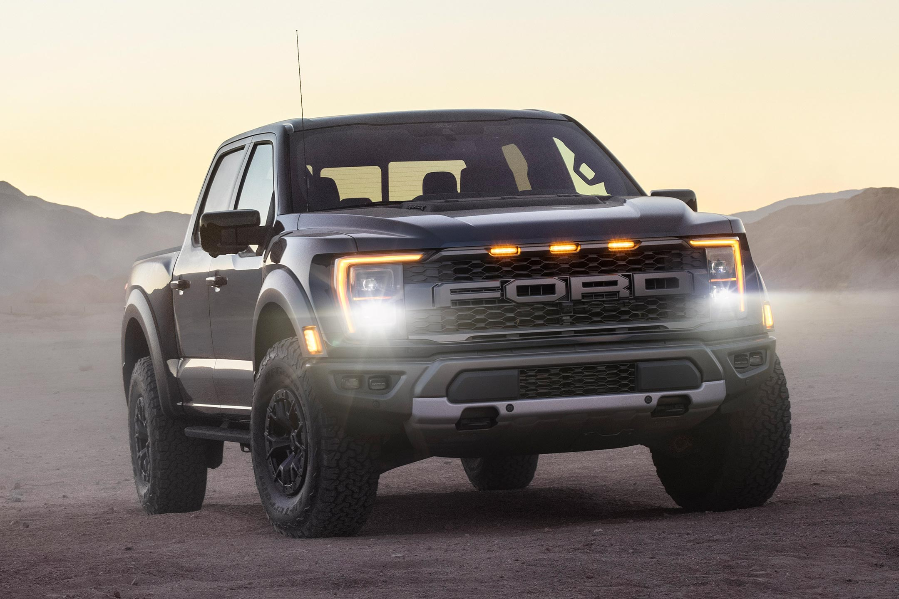
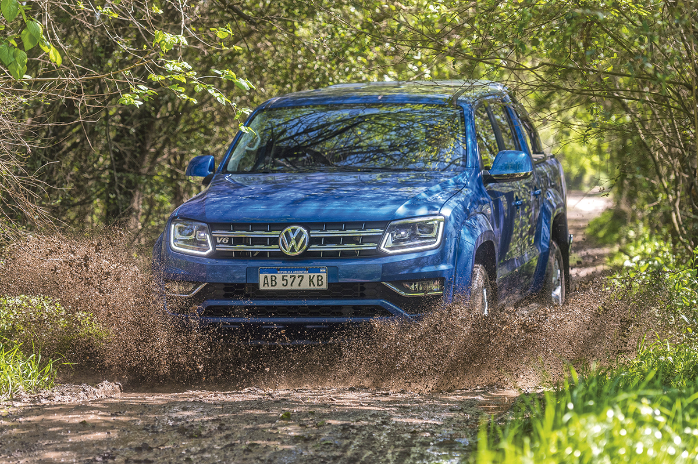

Con tantos vehículos nuevos y seminuevos, no es de extrañar por qué M.H Automotores se ha convertido en una de las principales concesionarios de autos en Argentina . Desde nuestros inicios, nos hemos esforzado por brindar asesoramiento de calidad a nuestros clientes sobre los mejores vehículos en el mercado. Ofrecemos una amplia gama de opciones, y nuestro equipo de profesionales está aquí para satisfacer todas sus necesidades.


ef